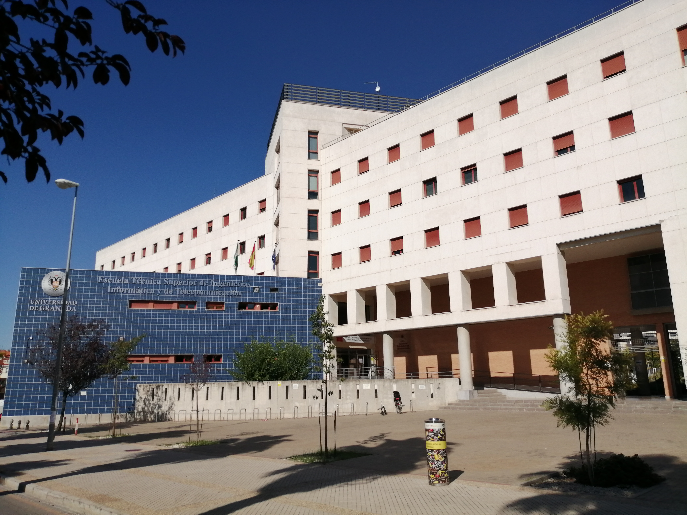
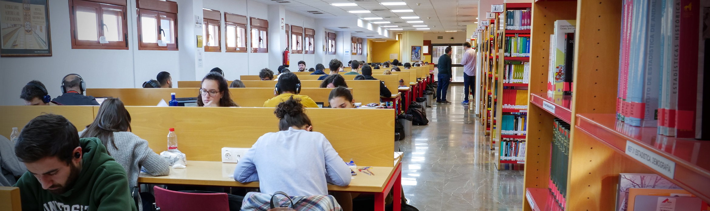
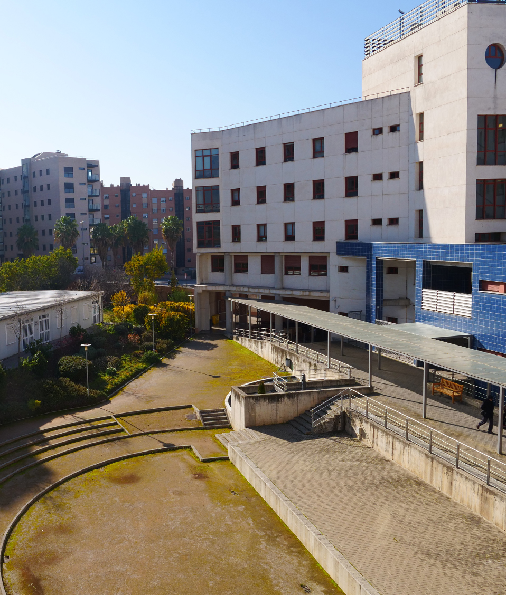
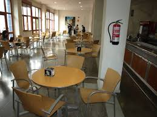
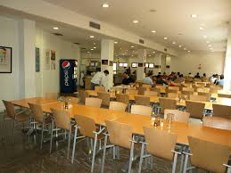
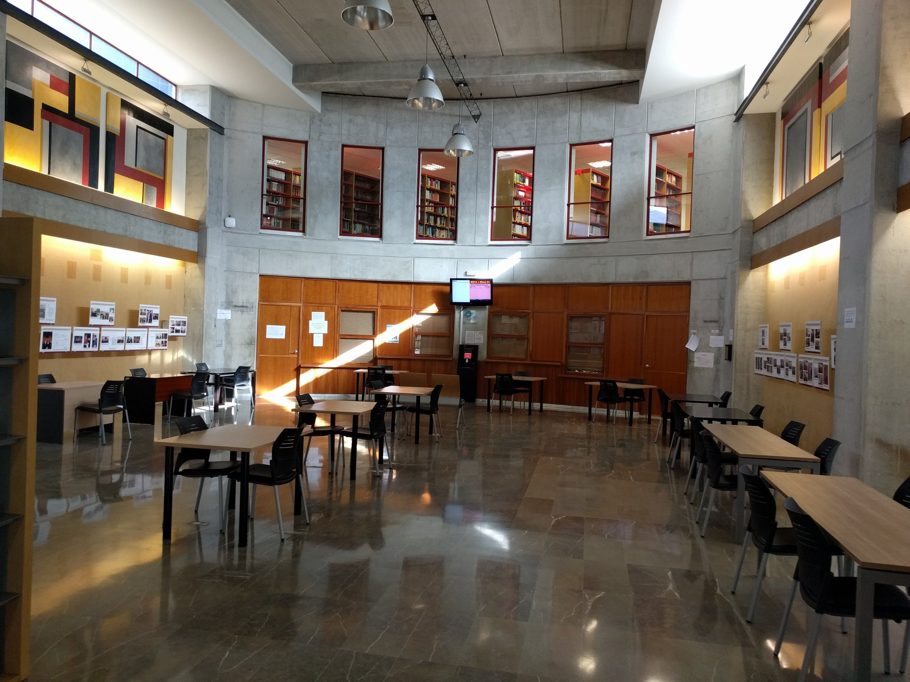

DESCRIPCIÓN DEL CENTRO
La Escuela Técnica Superior de Ingenierías Informática y de Telecomunicación (ETSIIT) es un centro docente de la Universidad de Granada situado en el campus Aynadamar, junto a la Facultad de Bellas Artes.
El horario de apertura al público es: de lunes a viernes de 8:30 a 20:30 horas ininterrumpidamente.
El edificio de la ETSIIT se encuentra en:
- Calle Periodista Daniel Saucedo Aranda s/n
- E-18071 (Granada-Spain)

Instalaciones y servicios
-
Biblioteca

-
Zona exterior
La ETSIIT dispone de una zona exterior con jardín, mesas y bancos. Además dispone de un aparcamiento de bicicletas en la entrada del edificio.

-
Cafetería y comedor
La ETSIIT cuenta con una cafetería y un comedor universitario, ambos situados en la planta baja del edificio principal.


-
Conserjería
Horarios: de lunes a viernes de 8:00 a 22:00.
Secretaría
El horario de atención al público es de 9 a 14 horas, de lunes a viernes.
Puedes pedir tu cita del siguiente modo:
- Presencialmente: En la máquina expendedora de la Secretaría.
- Online: Cita previa a través de CIGES o desde tu móvil con Android.

Cesión de espacios
La normativa y precios del alquiler de aulas de informática, aulas de teoría, aulas de prácticas, salas de reuniones, salas de conferencias, salas de trabajo, etc. se puede consultar en los presupuestos de la Universidad de Granada.